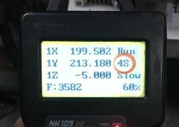
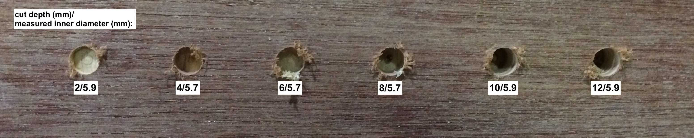
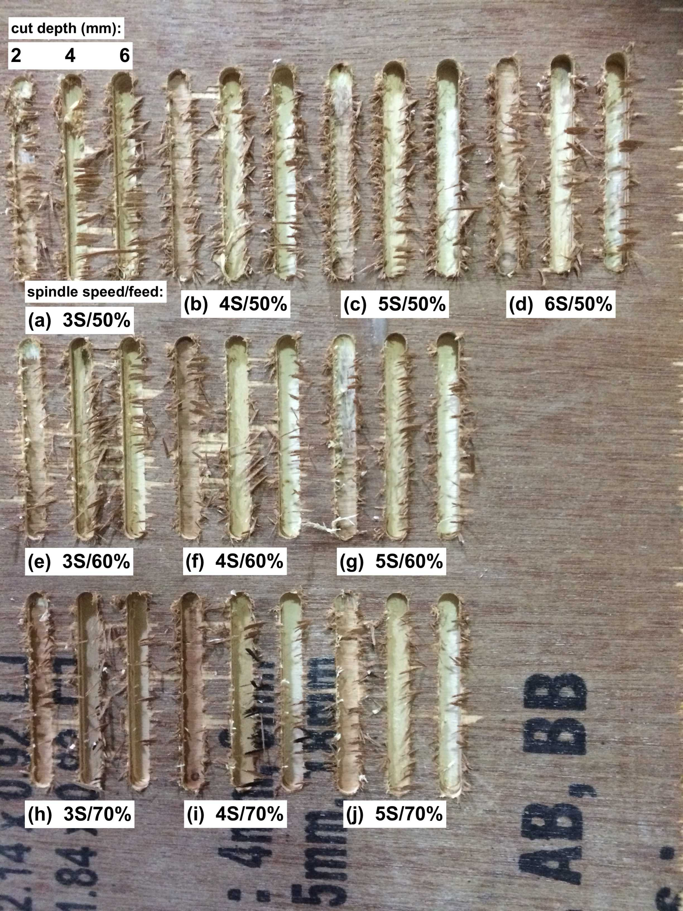
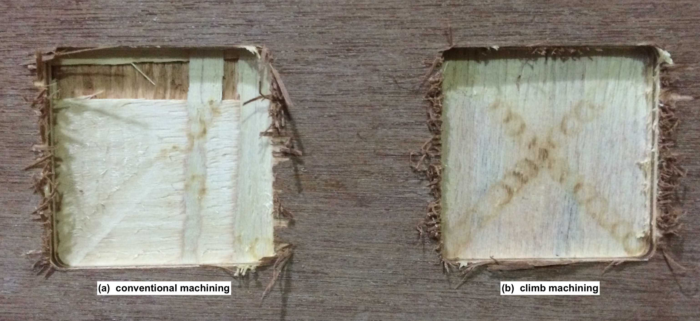

Feed speed is the rate at which the workpiece moves into the cutter. It is always determined in relation to the spindle speed. Using the wrong feed speed can produce too much dust or burn the workpiece. To determine the optimum feed speed you can use a feed speed table or calculate it mathematically.The CNC we had at our facility was an assembled one, Most of it is imported from china, the bed size is about 8X4 Feet. The feed rate and the spindle speed is controlled by Teach pendant in this machine unlike other ones, in which the feed and spindle speed is given in CAM Software.The spindle speeds in the machine is denoted by a number followed by S. They are 4S, 5S, 6S, 7S. 4S being the slowest and 7S the fastest.Tha maximum spindled speed at 100% is 3200RPM.
Cutting speed is defined as the speed (usually in feet per minute) of a tool when it is cutting the work. The cutting speed in this machine is mentioned in percentage 10% to 100%, My instructor has asked me not to go beyond 70% due to safety reasons.
The tool isn't a perfect straight line, it has some degrees of freedom in the collet, and the collet might also not be straight. So, the reality is your tool wobbles a little bit, jiggles around as it goes around, and so runout is the actual diameter of what's cut. If what's cut is larger than the diameter of the tool, it is because of imperfections in how its held in the collet. And so, one of the things you have to test is the kerf and the runout. To test for runout, we cut holes at 6 different cut depths, and measured their inner diameters. The data is as follows:
These were the observations.
Conventional and climb machining was done in this test.Both the tests seems to be ok. Conventional Machining : In conventional milling, the cutter rotates against the direction of the feed.Few Facts about conventional Maching :
Climb Machining : In climb milling, the cutter rotates with the feed.Few Facts about Climb Machining :
Climb milling is generally the best way to machine parts today since it reduces the load from the cutting edge, leaves a better surface finish, and improves tool life. During conventional milling, the cutter tends to dig into the workpiece and may cause the part to be cut out of tolerance. Even though climb milling is the preferred way to machine parts, there are times when conventional milling is the recommended choice. Backlash, which is typically found in older and manual machines, is a huge concern with climb milling. If the machine does not counteract backlash, conventional milling should be implemented. Conventional milling is also suggested for use on casting or forgings or when the part is case hardened since the cut begins under the surface of the material.
